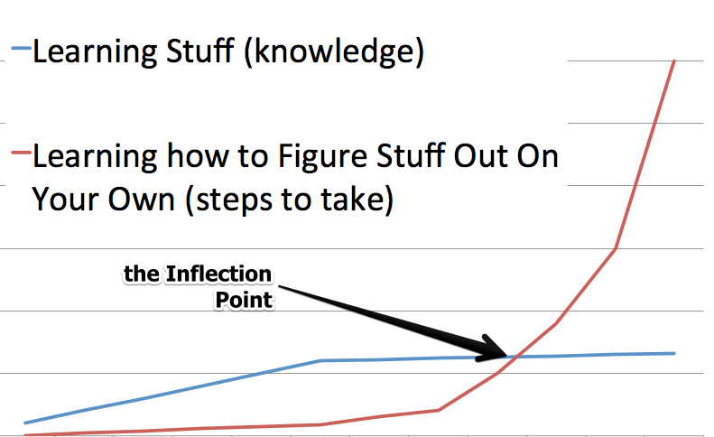
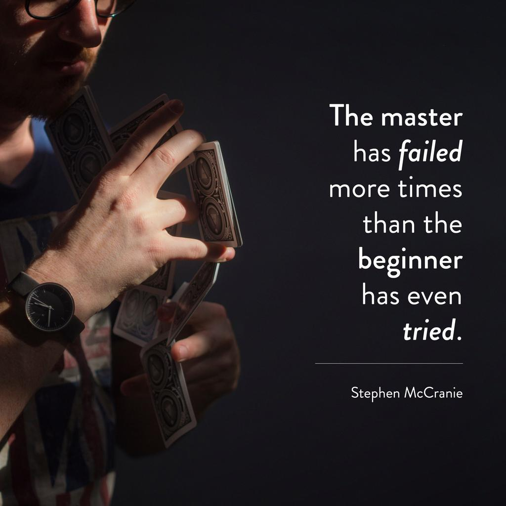

加速你编程技能的关键
目录
加速你编程技能的关键
（注：本文为译文，原文链接在文章最后）
当你学习编程时，有一个瞬间一切都开始改变。在 Firehose，我们喜欢把这个瞬间称为 编程拐点 。在这个阶段之后，你作为开发者的运作方式将大为不同。建立拐点直到你不再需要任何手把手的指导是在编程中变得自给自足的过程，这可以是一个短沮丧的经历，但一但拐点在你身后，它就会令人难以置信的赋予力量。

在 Firehose，我们的目标不仅仅是教你 Ruby，如何构建 web 应用或如果写测试。尽管我们的确教授这些还其他更多技能， 我们的主要目标是加速学生通过拐点，让他们获得解决他们遇到的任何问题的能力 。我们相信能够自己解决问题是一个无价的技能，并且教授这个方法将会比简单的学习如果构建一套 apps 带你走的更远。
教程阶段（3-8 周的认真编程）
当你开始学习编程，有很多信息你暂且不知道。这些信息做叫 特定领域知识 。例如包括：如果在 ruby 中写一个循环或如果使用 Ruby on Rails 从数据库中取出某些东西。特定领域知识包含特定编程环境中的特有的协议。
成为自给自足的开发者的第一步是学习如何完成特定的任务。一但你掌握了这些特定任务，各个部分如何组合在一起的大轮廓将会变得明显。随着时间的推移，你会开始认识一些模式，并且最终那些起初看起来令人困惑和陌生的事物将成为第二天性。
对刚开始学习的学生来说，最重要的要获取的技能注意细节
在浏览文档或教程等材料时，密切关注细节是非常重要的。即使是最轻微的错别字和拼写错误也会导致错误信息或 bug。在一开始看见错误信息是令人沮丧的经验，但是这是学习过程中的一个至关重要的步骤。在这个阶段处理错误信息和问题，会教你在安全环境中最重要的编程技能之一：注意细节。
- 随着时间的推移，你会 学习如何阅读错误信息 并且快速提取问题的相关细节。你第一次看见一条错误信息时，你会花费一段时间才能解读它真正的含义。但是在你已经见过数百条错误信息（你会看到数百条！）后，你将能够快速定位问题的位置和解决问题所需的相关详细信息。
- 你应该 从你解决的每个错误信息中学习 。不要只是修复错误并完成它；理解你正在修复的代码有什么问题。通过从你的每一个错误中学习，下次你犯同样的错误，你将能够更快地修复它。
- 最初，你可能每次你看见的错误信息都会寻求帮助。随着时间的推移，你会学会通过仔细检查你的代码和进行智能的谷歌搜索，你将学会减少寻求帮助的频率。
在教程阶段，你会按照说明进行操作。起初，你会发现按照说明操作很困难，并且错误信息会经常出现。随着时间的推移，你会培养调试错误的技能，并更好地关注小细节，你将能够更快地取得进步。当你结束教程阶段时，你会注意到你能够以更快的速度编写代码。
这时，一些人感觉很自信——就像他们已经准备好了放弃训练轮并在没有结构化指导的情况下构建东西——并愉快地潜入深渊。其他学生会获得更多教程，尝试获得更多他特定领域的知识以寻求“完全理解”。不幸的是，教程仅能带你到这里，并且在教程或指南中找不到真正的自信。真正的自信来自于在不知道如何解决的问题中挣扎，并独自发现解决方案。
编程的肮脏小秘密是……
你永远不会知道解决问题所需的一切。踏上旅程，你可能预想你自己最终学会你需要学习的一切，并使自己准备就绪。 然而这一刻永远不会发生。
编程是一种终身学习的经历。有经验的软件工程师寻求为他们尚未解决的问题找到解决方案，因为这让他们有机会学习更多。如果你发现你自己在等待，等待你最终感觉你自己了解了所有关于编程的知识的那一刻，请了解这一点：你等待的那一天永远不会到来。并且这是一件美妙的事情。

在以下情况下，你已经准备好了跳到下一段旅程：
- 你已经看到了足够的错误信息， 它们不再让你感到震惊 。相反，你知道如何解读它们的含义以及代码中查找问题的位置。
- 你是用谷歌搜索问题的专家。 当你努力添加功能或看到令人困惑的信息时，你知道要搜索什么才能找到你所需要的信息。
- 你能够 引用你在你的其他程序中写的代码并遵循其中的模式 ，而不是总是寻求一步一步的说明。
拐点（2-4 周，以正确的心态）
拐点阶段是学习编程时最令人沮丧的阶段之一，但在很多方面，这也是唯一重要的阶段。这是你逐步停止使用教程并开始解决没有人为你提供解决方案的问题的关键。
在某些时候，你会觉得你还没有准备应对这个阶段，并且像是你想要回到根据明确的大纲构建东西的阶段。不要成为这种心态的牺牲品。你感到沮丧的原因是：
在拐点阶段，你会比在前个阶段编程速度慢 10-20 倍
你可能会开始质疑自己，并想自己是否真的有能力成为一名程序员。不安全感和怀疑感在这个阶段很常见。
尽管你感觉到你正在以更慢的速率学习和完成事情的，但实际上，你正在实现最重要的事情。虽然你的特定领域知识正在快速发展，但你正在学习的一切都将与程序性知识有关。
程序性知识是在学习过程中自学你不懂的东西的能力。当你需要实现一个新功能时，你应该使用哪种谷歌搜索？在这个时候，当涉及到许多你想要完成的事情时，你会觉得自己“在黑暗中”。学习如何自己找到光明至关重要，因为你永远不可能知道所有要知道的事情，所以你需要能够自学如何解决手头的问题。
大多数人没有意识到为了学习编程，你需要同时学习特定领域和程序性知识。
在你的余下的生活中，每一天都超越自己的极限
一些软件工程师一旦找到立足点，就会留在自己的舒适区。这些类型的程序员被称为维护程序员——不是你应该努力成为的。相反，你应该每天都努力超越自己的极限。程序员辞职最常见的原因是”因我已经解决了所有有趣的问题，所以不再具有挑战性。“
与其试图将编程项目拉入你的舒适区，你应该寻找超出你当前技能范围的问题。这是建立和扩展你的技能的唯一方法。
用 Firehose 的学生再通过他的拐点时的话来说：
我仍然感觉我是在深渊中！我只是越来越舒服，知道那是我必去的地方！
在 web 开发中，实际上有两个拐点会走到一起。
web 开发的拐点 是你能构建你想要的任何数据库驱动的应用程序的点。这意味着能够构建一个包含许多页面的 web 应用程序，这些页面通过一个简单的数据库存储和检索信息。Web 开发人员称之为：”掌握 CRUD。“在这个阶段，你应该能够简单的通过按照在 Github 或 blog 上提供的文档来集成第三方库（例如 ruby gem）。
算法和数据结构拐点 是一个更不不痛不痒的拐点，但实际上更重要。征服了这一点的人除了将掌握编程的基础知识并拥有解决复杂编程挑战的深度知识外，还将掌握他们正在使用的编程语言。
征服了算法和数据结构拐点的人将能够：
- 编写排序算法
- 实现和反转链表
- 理解并编写使用堆栈、队列和树的程序
- 使用递归或迭代解决方案编写计算机程序
简单来说，一但你通过了这个拐点，你将掌握数据操作并了解你的代码决策对性能的影响。传统的计算机科学学位只专注于让学校通过算法和数据结构的拐点。许多大学使用业界通常不使用的百年成语言来教授这一点，像 Scheme、Racket 或 LISP。
在大多数技术面试中，面试官将会假设你已经通过了 web 开发拐点，因为这更容易做倒，并将他们的问题集中在评估你的算法和数据结构的技能上。 这些问题一般会集中在我们上面提到的主题上：排序算法、反转链表以及使用堆栈、队列和树。
一但开发者通过了 web 开发拐点以及算法和数据结构拐点，他们就掌握了通往王国的钥匙。
这些开发者将能够解决两者交叉的挑战：需要在高级 web 应用程序的上下文中构建的复杂算法。这是专业 web 开发者每天所做工作的核心。
拐点的后果
当第一次听到时，拐点的最大后果听起来有点违反直觉。深吸一口气：
在学习编程时，特定领域知识在大局中不重要。
没错。我没有开玩笑——这真的没有那么重要。一但你通过了拐点，这些概念将在一两周甚至几天的教程内流畅地翻译！
最终真正重要的是：
- 你对 web 开发框架有扎实的掌握
- 你对用任何编程语言 编写的算法复杂的代码有扎实的掌握
招聘经理希望开发者具有扎实的 web 开发和算法技能。
当我在 Paypal 工作时，我的团队聘请了一位没有 Rails 经验的高级 Rails 开发者——他对 Python、LISP 和 Perl 语言有许多开发经验。在几天之内，他就对团队已经产生了很大的冲击。并且在几周内：更是巨大的冲击。他很快升任技术团队领导，这是我参与过的最佳招聘决策之一。
不要担心堆栈。 许多人会说像是“AngularJS 最近很热门”、“JavaScript 在崛起”或“最新的流行是……”的事情，对此我的回复是：”所以呢？“当你正在学习如果编程时，你唯一的目标应该是找到拐点并消灭它。一旦你这样做了，学习这种最新的、性感的时尚根本不成问题。
变得自力更生。 拥有不依靠结构化的指导就能学会新的编程技能的能力，意味着你不再需要等待任何人来帮助你。这意味着对于你需要学习的大部分内容，你可以简单的搜索互联网并阅读你需要了解的各种资料。
这不意味着你立即”知道“一切，而只是现在一切都是”可以弄清的“，因此本质上，你是不可阻挡的。
你在拐点期间培养的技能
作为软件开发者，最好的参考资料是你已经编写的类似的代码。当你完全理解你编写的代码，你不需要将所有细节都提交到大脑中。这意味着 在构建新功能时，你应该问自己的第一个问题是：”我之前构建过类似的东西吗？“ 如果答案时肯定的，重新访问并在脑海中逐行过一遍。向自己重新解释代码在做什么？并问自己”我现在可以使用相同的办法吗？“
视频在解释特定领域的细节方面很糟糕 因为它们需要太长的时间来个观看。比如你想集成 Goolge Maps API。一旦你有做过一次的经验，在 Github 中打开代码、复制代码并粘贴到新项目中可能不需要一分钟。另一方面，视频通常需要花费 10-30 分钟来重新观看。
尽可能有效地通过拐点的策略
因为通过拐点时学习编程的最重要的一部分，你应该做好准备，让这个过程尽可能顺利。这意味着当你在教程阶段就应该开始准备，并在此期间保持正确的心态。
在教程阶段，从结构化的资料中休息一下，并在此过程中给自己一些挑战问题。
- 对于每一节课， 尝试做一些在你正在学习的教程范围之外的事情 。如你果正在学习的教程提供了”挑战“或”自我指导“部分，将它们全部都完成。解决没有指导的挑战将会给你在没有结构化指导的情况下做事的重要经验。
- 尽量少使用教程。 在 Firehose，我们经常引导学生了解如果集成某些 gems 或使用提供的文档做事。而不是简单的让刚起步的人遵循教程中解释的说明，许多学生会遵循文档并将教程作为备份使用。 注意文档将会把你当作已经通过了拐点的开发者来对待。 越来越轻松的阅读和遵循 Github 上的文档将会使你在你一个人时比其他人更有优势。
- 专注于要点并使用重复。学习如果做一些常见的事，像从头开始启动应用程序、将新的应用程序推送到个 Github 和 Heroku，以及尽早构建数据库迁移。
突破拐点可能具有挑战性。这里有一些要点可以帮助你突破：
- 了解 这是一个困难的过程，并让你自己放松。 此外，设定切合实际的期望。你无法将”超人“级别的学习教程的速度和”蜗牛“级别的自学速度进行比较。记住你学到了很多东西，但是在这个阶段，你正在学习一种全新的可以自己解决新事物的技能。
- 如果你正在与自信心争斗，要指导你现在的感觉是完全正常的。继续努力。如果你还感觉挣扎，尝试和最近通过拐点的一些人交谈。他们能够与你所处的位置相关联，并向你保证你经历的只是暂时的。 始终如一地工作，但是不要让自己过度劳累。 在比赛的这个阶段，要知道你每天最多只能工作 6 小时左右。在精疲力尽的状态下工作只会延迟你建立拐点的时间。
在这个阶段获取信心的最佳方法是客服你的任何疑虑。你的情绪可能会开始像过山车一样。有时，你会感觉自己着火了一样，但是在同一个问题上挣扎了 15 小时后，感觉截然相反是很常见的。
无法知道某些事会占用你 5 分钟还是 5 小时可能会令人感到沮丧，但是每次你克服并成功实现了一个新功能，信心的快速增长将是你所需要的一切。在没有任何帮助的情况下解决了一些难题后，你会沉迷于在舒适区之外建造东西的感觉。
如何知道你什么时候通过了拐点
拐点过程的最后阶段是可接受的。接受软件开发是一个不断学习的过程。接受那种你已经成功地学会了一切的感觉仅仅意味着你应该开始考虑解决更复杂的问题。
你是否经历过拐点？分享这篇文章并开始和你的朋友对话——你会惊讶多少人已经到达并超越了这一刻。